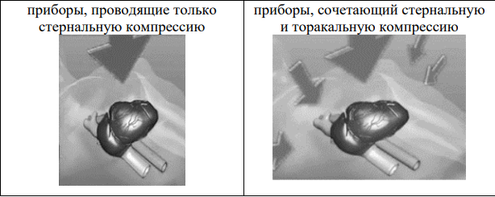
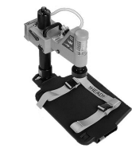
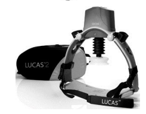
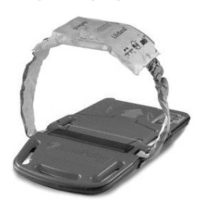

Автоматические устройства для сердечно-легочной реанимации
Правильно проводимый массаж грудной клетки – это тяжелая физическая работа, отнимающая много сил. Кроме этого, человек, который проводит массаж, не может одновременно выполнять какие-либо другие реанимационные мероприятия. Именно поэтому около полувека назад начали появляться устройства, автоматизирующие проведение сердечно-легочной реанимации. Они совершенствовались и дорабатывались.
В настоящее время такие приборы включены в стандарт оснащения машин скорой помощи класса "С" под названием "Устройство автоматическое для сердечно-лёгочной реанимации".
Существуют два типа устройств:

 Первый тип – это приборы для проведения закрытого массажа сердца при сердечно-легочной реанимации, использующие поршень для давления на грудину. Прибор как бы воспроизводит действия спасателя, проводящего ручной массаж. Наиболее известными устройствами, имеющими такой принцип работы, являются Lucas и Lucas 2, производства Physio Control и Thumper, Life-Stat, выпускаемые Michigan Instruments. Для компрессий эти приборы используют сжатый воздух (Lucas) или кислород (Life-Stat), а значит для работы с ними необходимо иметь дополнительный воздушный или кислородный баллон.  Для привода Thumper может использоваться и кислород, и сжатый воздух. Это делает всю конструкцию громоздкой, затрудняет транспортировку. Модель Lucas 2 работает от аккумулятора, а значит, не имеет данного недостатка. Некоторым преимуществом ряда подобных систем является то, что они могут сочетать в себе автоматическое проведение непрямого массажа сердца с одновременным проведением искусственной вентиляции легких. В частности, прибор Life-Stat способен проводить ИВЛ, синхронизированную с компрессиями грудной клетки. А Thumper – не синхронизированную ИВЛ.
Стоит отметить, что автоматические устройства для проведения сердечнолегочной реанимации Lucas и Lucas 2 имеют ограничения использования при транспортировке пациента. Обязательным условием их работы является нахождение грудной клетки в горизонтальном положении. Соответственно, при транспортировке пациента по лестнице, прибор должен быть отключен или должны использоваться специальные носилки
 Второй тип - приборы, сочетающие в себе стернальную и торакальную компрессию при проведении непрямого массажа сердца, в настоящее время представлены только одним устройством: аппаратом AutoPulse, производимым Американской компанией Zoll. Принцип его работы такой: на груди пациента застегивается тканевой бандаж, который фиксируется в самом приборе, располагающемся под пациентом. Сначала прибор подтягивает бандаж, одновременно измеряя окружность груди и показатели сопротивления грудной клетки. Затем начинаются компрессии – подтягивание ленты бандажа таким образом, чтобы грудная клетка сокращалась на 20%. Этим достигается сжатие грудной клетки, а значит и сокращение сердечной мышцы со всех сторон. Это повышает эффективность массажа и увеличивает сердечный выброс. Такой способ проведения массажа сердца не накладывает ограничений на транспортировку пациентов. AutoPulse позволяет транспортировать пациентов с углом наклона до 45 градусов, например, спускаясь или поднимаясь по лестнице.
Интересной особенностью аппарата AutoPulse является то, что он позволяет проводить закрытый массаж сердца беременным женщинам, которым из-за пережатия нижней полой вены маткой, рекомендовано проведение непрямого массажа сердца в положении «на боку» под углом около 30 градусов. Ни один другой прибор не способен работать в этих условиях.
В стандарте ЕСР 2015 года указано, что рутинное применение устройств для механических компрессий грудной клетки не рекомендуется, но их использование возможно в тех ситуациях, когда длительное выполнение качественных компрессий невозможно или угрожает безопасности спасателя, поэтому их применение оправдано при проведении реанимационных мероприятий в процессе эвакуации авиационным или автомобильным транспортом, где проведение классического непрямого массажа сердца не представляется возможным.